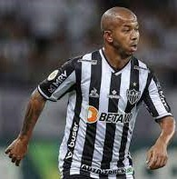

Alexi Stival, mais conhecido como Cuca,é um treinador e ex-futebolista brasileiro que atuava como atacante. Atualmente comanda o Atlético Mineiro.
Éverson Felipe Marques Pires, mais conhecido como Éverson, é um futebolista brasileiro que atua como goleiro.Joga pelo Atlético Mineiro,sendo também goleiro reserva da Seleção Brasileira.
Junior Osmar Ignacio Alonso Mujica é um futebolista paraguaio que atua como zagueiro e lateral-esquerdo. Atualmente, defende o Atlético Mineiro, emprestado pelo Krasnodar.

Igor Rabello da Costa, mais conhecido apenas como Igor Rabello, é um futebolista brasileiro que atua como zagueiro. Atualmente joga no Atlético Mineiro.
Guilherme Antonio Arana Lopes, mais conhecido como Guilherme Arana, é um futebolista brasileiro que atua como lateral-esquerdo. Atualmente, joga no Atlético Mineiro.
Mariano Ferreira Filho , é um futebolista brasileiro que atua como lateral-direito. Atualmente, joga pelo Atlético Mineiro.
Allan Rodrigues de Souza, conhecido simplesmente como Allan,é um futebolista brasileiro que atua como volante. Atualmente, joga pelo Atlético Mineiro.
Jair Rodrigues Júnior, conhecido apenas como Jair, é um futebolista brasileiro que atua como volante. Atualmente, joga pelo Atlético Mineiro.
Federico Matías Javier Zaracho, conhecido como Matías Zaracho, é um futebolista argentino que atua como meia-atacante e ponta. Atualmente, joga pelo Atlético Mineiro.
 Givanildo Vieira de Sousa, mais conhecido como Hulk, é um futebolista brasileiro que atua como atacante. Atualmente, joga pelo Atlético Mineiro.
Givanildo Vieira de Sousa, mais conhecido como Hulk, é um futebolista brasileiro que atua como atacante. Atualmente, joga pelo Atlético Mineiro.
Marcos da Silva França, mais conhecido como Keno, é um futebolista brasileiro que atua como atacante. Atualmente, joga pelo Atlético Mineiro.
Eduardo Jesús Vargas Rojas é um futebolista chileno que atua como atacante. Atualmente, joga pelo Atlético Mineiro.
Ignacio Martín Fernández, também conhecido como Nacho Fernández, é um futebolista argentino que atua como meio-campista. Atualmente, joga pelo Atlético Mineiro.
Rubens Antonio Dias, conhecido apenas como Rubens, é um futebolista profissional brasileiro que atua como meio-campista do Atlético Mineiro.
Réver Humberto Alves Araújo, mais conhecido como Réver, é um futebolista brasileiro que atua como zagueiro. Atualmente defende o Atlético Mineiro.
Cristian David Pavón é um futebolista argentino que atua como ponta-direita. Atualmente joga no Atlético Mineiro.
Pedro Victor Delmino da Silva, mais conhecido como Pedrinho, é um futebolista brasileiro que atua como meio-campista e ponta-direita. Atualmente, joga pelo Atlético Mineiro.

Alan Kardec de Souza Pereira Júnior é um futebolista brasileiro que atua como centroavante. Atualmente joga no Atlético Mineiro.
Jemerson de Jesus Nascimento, ou simplesmente Jemerson, é um futebolista brasileiro que atua como zagueiro. Atualmente, joga pelo Atlético Mineiro.
Ademir da Silva Santos Junior, mais conhecido como Ademir é um futebolista brasileiro que atua como atacante. Atualmente joga pelo Atlético Mineiro
 Nathanael Ananias da Silva, mais conhecido como Nathan Silva, é um futebolista brasileiro que atua como zagueiro e volante. Atualmente, joga no Atlético Mineiro.
Nathanael Ananias da Silva, mais conhecido como Nathan Silva, é um futebolista brasileiro que atua como zagueiro e volante. Atualmente, joga no Atlético Mineiro.
Cláudio Rodrigues Gomes, conhecido apenas como Guga, é um futebolista brasileiro que atua como lateral-direito. Atualmente, joga pelo Atlético Mineiro.
Eduardo Colcenti Antunes, mais conhecido como Eduardo Sasha ou somente Sasha é um futebolista brasileiro que atua como